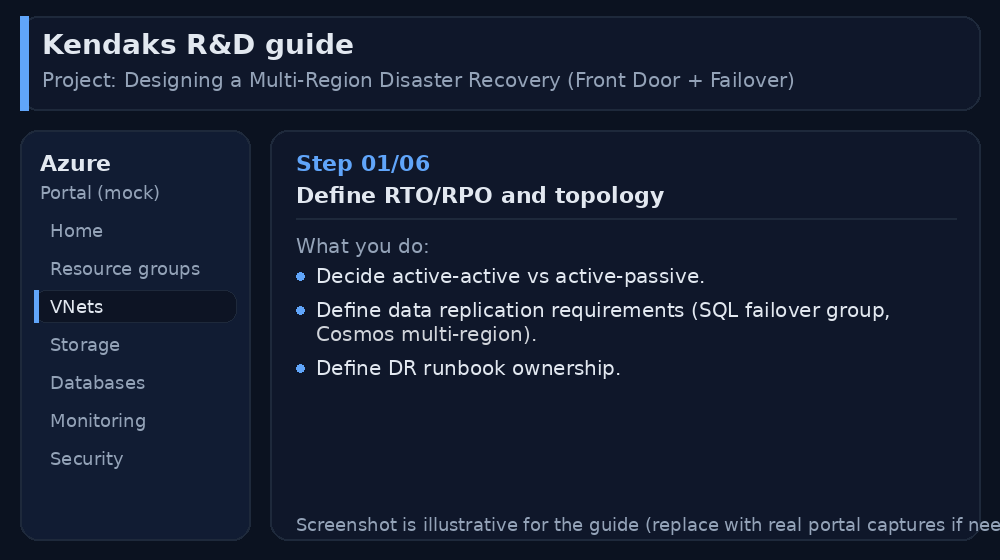
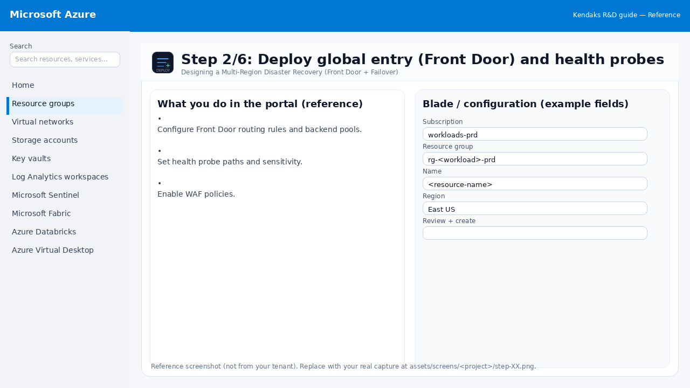
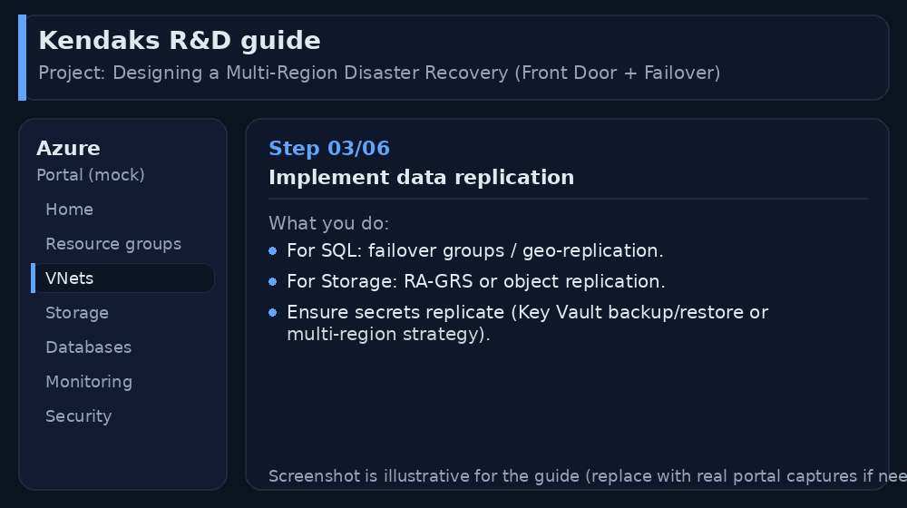
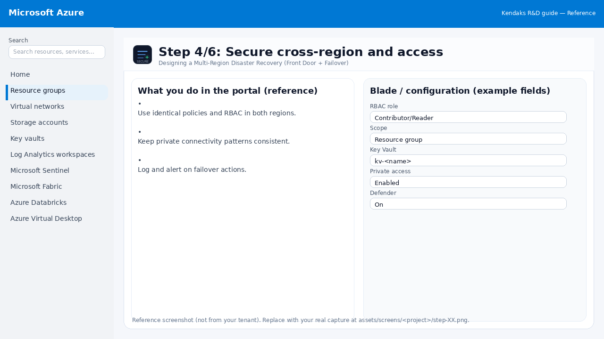
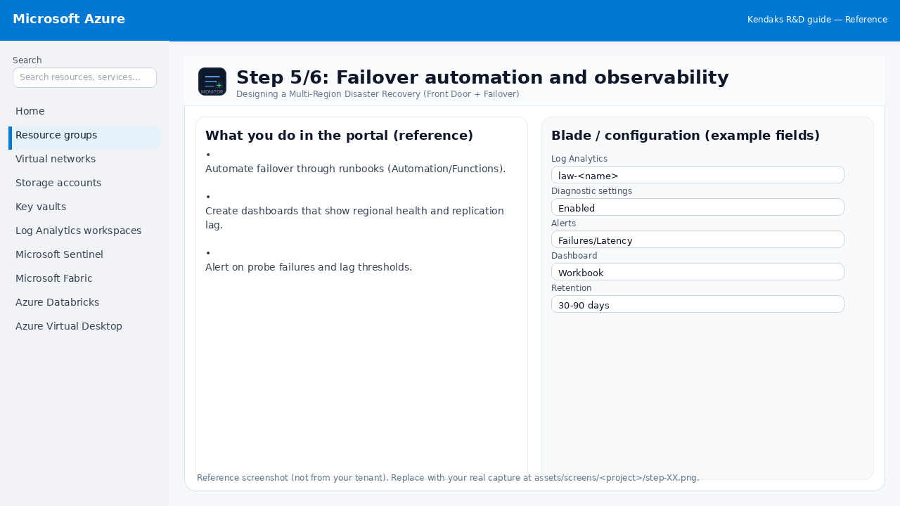
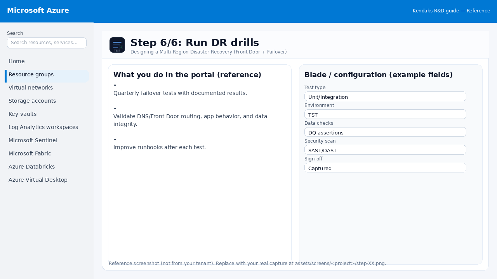

Designing a Multi-Region Disaster Recovery (Front Door + Failover)
Category: Reliability
Scenario: A customer portal needs DR across regions with low RTO/RPO. Example: 'Kendaks Portal' uses active-passive with automated failover.
Architecture diagram
High-level view of the main components and data/control flows.
Low-level architecture diagram (Visio-style)
Implementation view (networking, security, ops). Click to open full size.
Low-level architecture details
(No low-level text provided.)
Step-by-step implementation
Step 1/6

Define RTO/RPO and topology

Reference portal screenshot (click to zoom). Replace with your tenant capture if needed.
- Decide active-active vs active-passive.
- Define data replication requirements (SQL failover group, Cosmos multi-region).
- Define DR runbook ownership.
Validation checklist
- Stakeholders have signed off the scope, SLAs, and data/security requirements.
- You have documented naming standards, environments, and ownership (RACI).
Step 2/6

Deploy global entry (Front Door) and health probes

Reference portal screenshot (click to zoom). Replace with your tenant capture if needed.
- Configure Front Door routing rules and backend pools.
- Set health probe paths and sensitivity.
- Enable WAF policies.
Validation checklist
- Deployment completed; smoke tests passed; rollback plan confirmed.
Step 3/6

Implement data replication

Reference portal screenshot (click to zoom). Replace with your tenant capture if needed.
- For SQL: failover groups / geo-replication.
- For Storage: RA-GRS or object replication.
- Ensure secrets replicate (Key Vault backup/restore or multi-region strategy).
Validation checklist
- Failover procedure is documented and tested (tabletop + technical drill).
- RPO/RTO measured and meets requirements.
Step 4/6

Secure cross-region and access

Reference portal screenshot (click to zoom). Replace with your tenant capture if needed.
- Use identical policies and RBAC in both regions.
- Keep private connectivity patterns consistent.
- Log and alert on failover actions.
Validation checklist
- Security baseline applied (Defender/Policy/WAF/Firewall rules as applicable).
- No public endpoints unless explicitly approved; private endpoints verified where applicable.
- Alerts are configured for high-risk events.
Step 5/6

Failover automation and observability

Reference portal screenshot (click to zoom). Replace with your tenant capture if needed.
- Automate failover through runbooks (Automation/Functions).
- Create dashboards that show regional health and replication lag.
- Alert on probe failures and lag thresholds.
Validation checklist
- Logs and metrics are flowing (check Log Analytics / Monitor).
- Alerts trigger correctly (test alert path to email/Teams/ITSM).
Step 6/6

Run DR drills

Reference portal screenshot (click to zoom). Replace with your tenant capture if needed.
- Quarterly failover tests with documented results.
- Validate DNS/Front Door routing, app behavior, and data integrity.
- Improve runbooks after each test.
Validation checklist
- UAT completed with representative users and scenarios.
- Performance meets baseline; issues tracked and remediated.